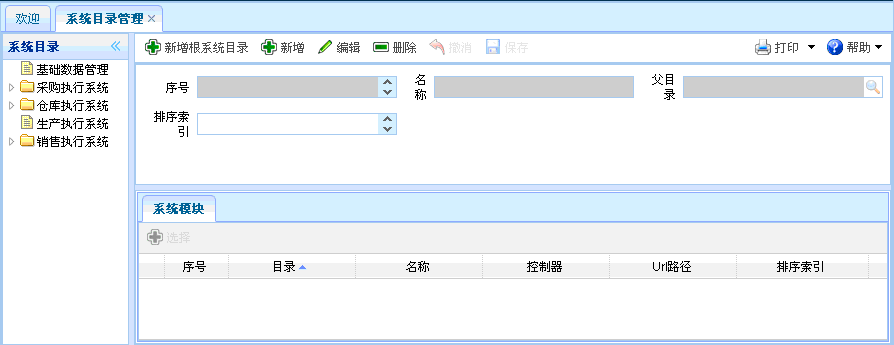
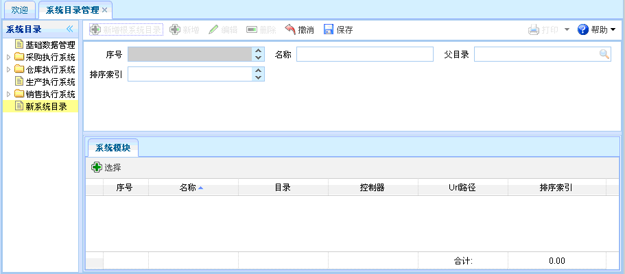
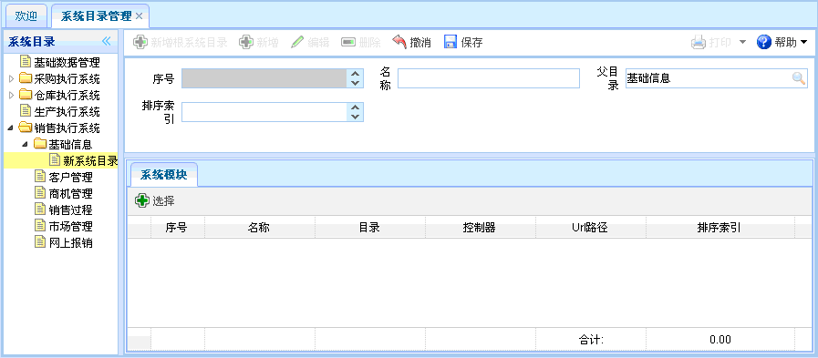
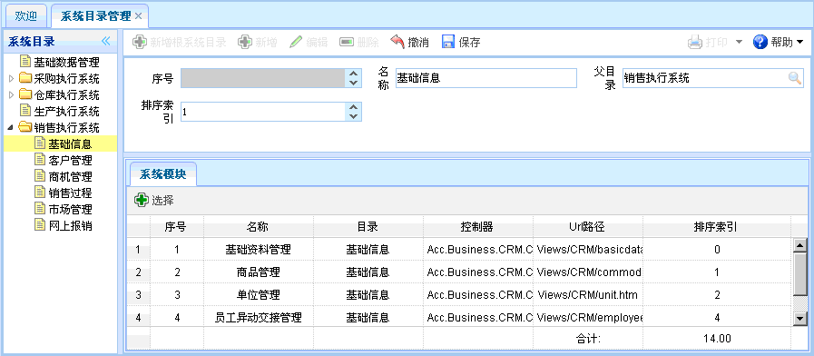

系统目录管理
系统目录管理
功能介绍：点击【系统管理员功能】到【系统目录管理】，打开系统目录管理页面，还可查看其相关的系统模块信息。 如下图所示。功能包括：新增根系统目录、新增、编辑、删除。

图表1-xt1-1【系统目录管理】
图表1-xt1-1【系统目录管理】
【新增根系统目录】：点击新增根系统目录，如下图所示。新增完毕，点击保存。其中灰色文本框为默认，有搜索图案的要进行查询。并可对系统模块进行选择。

图表1-xt1-2【新增根系统目录】
图表1-xt1-2【新增根系统目录】
【新增】：在系统目录中选择某项系统目录，点击新增按钮，如下图所示。新增完毕，点击保存。其中灰色文本框为默认，有搜索图案的要进行查询，并可对系统模块进行选择。

图表1-xt1-4【新增】
图表1-xt1-4【新增】
【编辑】：选中某项系统目录信息，点击编辑按钮后，出现如下图所示内容。进行编辑操作，修改完毕点击保存。其中灰色文本框为默认，有搜索图案的要进行查询，并可对系统模块进行选择。

图表1-xt1-5【编辑】
图表1-xt1-5【编辑】
【删除】：选中某项系统目录信息后，点击删除，就可以删除该系统目录信息。
 常见问题
常见问题
1、？
2、？
3、？